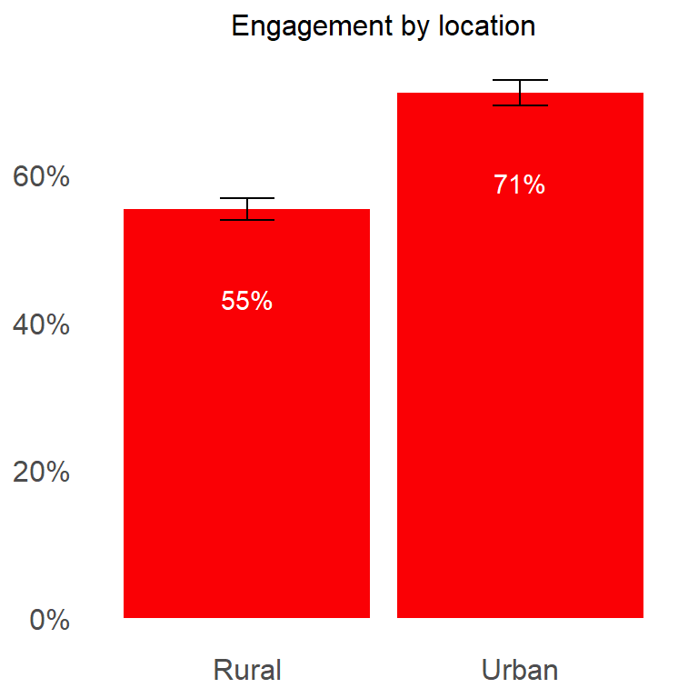
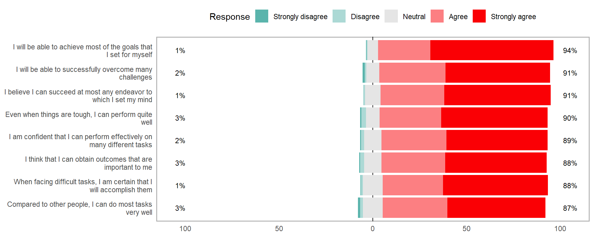
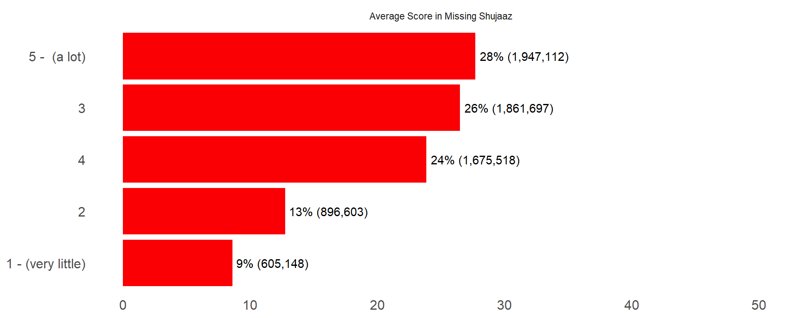

| Characteristic | Overall, N = 2,0021 | Gender | |
|---|---|---|---|
| Female, N = 1,0171 | Male, N = 9851 | ||
| Age | |||
| 15-19 | 1,089 (54%) | 541 (53%) | 548 (56%) |
| 20-24 | 913 (46%) | 476 (47%) | 437 (44%) |
| Location | |||
| Rural | 1,219 (61%) | 608 (60%) | 611 (62%) |
| Urban | 783 (39%) | 409 (40%) | 374 (38%) |
| Education Level | |||
| Incomplete primary | 155 (7.7%) | 80 (7.9%) | 75 (7.6%) |
| Complete primary | 965 (48%) | 461 (45%) | 504 (51%) |
| Complete secondary | 699 (35%) | 374 (37%) | 325 (33%) |
| Secondary and above | 183 (9.1%) | 102 (10%) | 81 (8.2%) |
| 1 n (%) | |||
1 Demographic Characteristics
1.1 Sample characteristics
Total sample size is 2,002 and includes a roughly equal number of female and male participants. The majority of participants are aged between 15-19 years. A larger proportion of participants reside in rural areas compared to urban areas. Most participants have completed primary education, with a significant number also having completed secondary education. Only a small proportion have an education level of secondary and above.
1.2 Relationship status
Majority of young people are either single or dating (93%).

1.3 Own children
Majority of the respondents do not have children of their own.

1.4 Biggest change in your life in the past 12 months
Overall, majority of the respondents experienced a negative change in the past 12 months.


1.5 Concerning issues
The bulk of youth are very concerned about unemployment and the economy.
| Absolute Number | ||||
|---|---|---|---|---|
| Issue | Very concerned | Somewhat concerned | Barely concerned | Not at all concerned |
| Terrorism | 375,751 | 401,266 | 216,397 | 889,307 |
| Poverty | 885,547 | 392,777 | 170,292 | 414,423 |
| Violence/war | 516,409 | 411,328 | 212,065 | 734,216 |
| Unemployment | 1,134,193 | 259,547 | 163,693 | 325,288 |
| Climate change | 631,955 | 524,433 | 248,946 | 474,487 |
| Crime | 691,201 | 386,440 | 219,001 | 583,179 |
| Economy | 1,288,854 | 233,227 | 109,800 | 245,039 |
| Gender inequality | 385,796 | 239,959 | 430,038 | 804,576 |
| Migration | 137,975 | 307,885 | 344,986 | 1,059,937 |
| Percentage | ||||
|---|---|---|---|---|
| Issue | Very concerned | Somewhat concerned | Barely concerned | Not at all concerned |
| Terrorism | 20% | 21% | 11% | 47% |
| Poverty | 47% | 21% | 9% | 22% |
| Violence/war | 27% | 22% | 11% | 39% |
| Unemployment | 60% | 14% | 9% | 17% |
| Climate change | 34% | 28% | 13% | 25% |
| Crime | 37% | 21% | 12% | 31% |
| Economy | 68% | 12% | 6% | 13% |
| Gender inequality | 20% | 13% | 23% | 43% |
| Migration | 7% | 16% | 18% | 56% |
2 General Media Consumption
2.1 Consumption Frequency
Most youth watch broadcast TV, watch movies, listen to radio, use internet and visit social networking sites.
| Absolute Number | |||||||
|---|---|---|---|---|---|---|---|
| Media Type | Several times a day | At least once a day | Several times a week | At least once a week | Several times a month | Less often | Never |
| Watch broadcast TV | 647,449 | 532,140 | 149,520 | 76,207 | 52,989 | 285,853 | 138,564 |
| Watch movies | 317,240 | 347,778 | 150,361 | 100,926 | 49,003 | 338,324 | 579,090 |
| Listen to the radio | 647,716 | 318,563 | 110,818 | 102,477 | 27,902 | 318,487 | 356,759 |
| Read local newspapers | 26,137 | 69,546 | 49,784 | 90,344 | 60,546 | 705,048 | 881,317 |
| Read local cartoon booklets | 47,750 | 23,688 | 65,076 | 82,401 | 113,137 | 943,207 | 607,462 |
| Use the internet (excluding social networking sites) | 583,476 | 274,852 | 120,454 | 110,424 | 34,628 | 233,509 | 525,378 |
| Visit social networking sites | 807,619 | 250,763 | 133,883 | 84,168 | 22,294 | 128,216 | 455,779 |
| Percentage | |||||||
|---|---|---|---|---|---|---|---|
| Media Type | Several times a day | At least once a day | Several times a week | At least once a week | Several times a month | Less often | Never |
| Watch broadcast TV | 34% | 28% | 8% | 4% | 3% | 15% | 7% |
| Watch movies | 17% | 18% | 8% | 5% | 3% | 18% | 31% |
| Listen to the radio | 34% | 17% | 6% | 5% | 1% | 17% | 19% |
| Read local newspapers | 1% | 4% | 3% | 5% | 3% | 37% | 47% |
| Read local cartoon booklets | 3% | 1% | 3% | 4% | 6% | 50% | 32% |
| Use the internet (excluding social networking sites) | 31% | 15% | 6% | 6% | 2% | 12% | 28% |
| Visit social networking sites | 43% | 13% | 7% | 4% | 1% | 7% | 24% |
2.2 Mobile phone ownership
71% of the youth own a mobile phone. Of those that own a mobile phone, 80% have at least one smartphone.

- Basic phone – only allows calling, messaging, saving numbers
- Feature phone – has camera, radio, basic internet
- Smartphone – has a touch screen, mobile applications, e.g., WhatsApp, Instagram, TikTok
| Ownership | Percentage | Number |
|---|---|---|
| Basic phone | ||
| No | 80% | 6,508,660 |
| Yes | 20% | 1,633,379 |
| Feature phone | ||
| No | 92% | 7,460,568 |
| Yes | 8% | 681,472 |
| Smartphone | ||
| No | 20% | 1,641,347 |
| Yes | 80% | 6,500,693 |
2.3 Times Youth Go Online
The most common times youth go online is 6pm - 10pm and 10pm - 2pm

2.4 Favourite Activities
The most common first choice activities youth do online include looking for entertainment, check what is new with friends, and posting personal pictures.

2.5 Platform visit frequency
Majority of youth visit WhatsApp, Facebook, Instagram and Tiktok at least once a day.
| Absolute Number | |||||||
|---|---|---|---|---|---|---|---|
| Platform | Several times a day | At least once a day | Several times a week | At least once a week | Several times a month | Less often | Never |
| 462,265 | 282,608 | 150,322 | 61,719 | 10,055 | 25,111 | 0 | |
| X | 64,405 | 21,170 | 16,073 | 0 | 0 | 0 | 0 |
| 287,917 | 112,346 | 90,240 | 43,973 | 4,324 | 20,074 | 0 | |
| YouTube | 66,195 | 45,183 | 29,400 | 12,255 | 0 | 3,704 | 0 |
| TikTok | 263,121 | 87,826 | 25,722 | 16,306 | 8,517 | 25,021 | 6,277 |
| 654,953 | 165,177 | 39,735 | 16,479 | 0 | 17,804 | 0 | |
| WhatsApp Business | 51,093 | 9,144 | 0 | 0 | 0 | 0 | 0 |
| Percentage | |||||||
|---|---|---|---|---|---|---|---|
| Platform | Several times a day | At least once a day | Several times a week | At least once a week | Several times a month | Less often | Never |
| 47% | 28% | 15% | 6% | 1% | 3% | 0% | |
| X | 63% | 21% | 16% | 0% | 0% | 0% | 0% |
| 52% | 20% | 16% | 8% | 1% | 4% | 0% | |
| YouTube | 42% | 29% | 19% | 8% | 0% | 2% | 0% |
| TikTok | 61% | 20% | 6% | 4% | 2% | 6% | 1% |
| 73% | 18% | 4% | 2% | 0% | 2% | 0% | |
| WhatsApp Business | 85% | 15% | 0% | 0% | 0% | 0% | 0% |
2.6 Platform Ranking
WhatsApp, Facebook, Instagram and Tiktok are the first choice most important platforms.

2.7 Media perception
In general, young people think that media content is relatable, understandable, and inspiring

3 Shujaaz awareness
3.1 Character Awareness
Character awareness varies significantly.

3.2 Awareness of Shujaaz Cartoon booklet
Approximately 68% of young people are aware of Shujaaz cartoon booklet.

3.3 Awareness of various programs
Awareness of Shujaaz’s programs is low and varies significantly from program to program.

3.4 Overall reach
8,014,277 (70%) young people are aware of Shujaaz media. These results include prompted and un-prompted reach.


3.5 Reach by persona
Brand awareness across all personas is largely similar (no significant differences).

3.6 Reach by location
Brand awareness significantly varies by location.

3.7 Reach by county
Brand awareness varies significantly by county.
| County | % Aware | Aware | Unaware |
|---|---|---|---|
| MARSABIT | 6% | 6,556 | 99,181 |
| TANA RIVER | 10% | 4,310 | 38,232 |
| GARISSA | 29% | 79,725 | 192,649 |
| MIGORI | 39% | 115,390 | 177,322 |
| NAROK | 44% | 128,382 | 164,779 |
| NYANDARUA | 47% | 67,264 | 76,778 |
| MOMBASA | 51% | 155,789 | 147,096 |
| TURKANA | 52% | 138,442 | 128,436 |
| ELGEYO MARAKWET | 52% | 45,511 | 42,089 |
| HOMA BAY | 52% | 149,129 | 136,267 |
| BARINGO | 57% | 100,106 | 76,805 |
| KERICHO | 59% | 138,749 | 96,985 |
| KAKAMEGA | 59% | 276,943 | 188,707 |
| KITUI | 60% | 171,576 | 115,767 |
| UASIN GISHU | 61% | 198,766 | 127,501 |
| KISII | 63% | 189,336 | 111,743 |
| KIRINYAGA | 66% | 81,678 | 42,467 |
| KAJIADO | 68% | 207,669 | 97,250 |
| KWALE | 70% | 150,492 | 65,892 |
| MERU | 72% | 253,940 | 100,918 |
| THARAKA NITHI | 73% | 63,394 | 23,459 |
| BOMET | 73% | 172,347 | 63,650 |
| County | % Aware | Aware | Unaware |
|---|---|---|---|
| KILIFI | 74% | 288,600 | 103,492 |
| NYAMIRA | 74% | 97,283 | 34,469 |
| KISUMU | 74% | 226,070 | 78,659 |
| KIAMBU | 74% | 479,399 | 164,550 |
| BUSIA | 75% | 178,309 | 60,687 |
| BUNGOMA | 75% | 330,409 | 109,969 |
| MACHAKOS | 76% | 270,080 | 86,359 |
| MAKUENI | 77% | 186,255 | 54,716 |
| EMBU | 79% | 110,524 | 29,599 |
| NANDI | 81% | 186,114 | 44,070 |
| SIAYA | 83% | 199,380 | 42,024 |
| NYERI | 84% | 129,237 | 25,395 |
| NAKURU | 84% | 479,406 | 91,917 |
| SAMBURU | 85% | 73,214 | 13,058 |
| LAIKIPIA | 85% | 108,091 | 18,538 |
| MURANGA | 86% | 183,372 | 30,898 |
| NAIROBI | 87% | 1,027,577 | 153,758 |
| TRANS NZOIA | 87% | 224,828 | 33,282 |
| WEST POKOT | 89% | 136,759 | 16,257 |
| VIHIGA | 92% | 125,996 | 11,373 |
| TAITA TAVETA | 100% | 77,878 | 0 |
4 Shujaaz Media usage
4.1 First time use of Shujaaz’s media
Except for the comic book, most young people haven’t used Shujaaz’s online content.
| Absolute Number | ||||||
|---|---|---|---|---|---|---|
| Media Type | I have not done it yet | In the past 6 months | More than 6 months to 1 year ago | More than 1 year to 2 years ago | More than 2 years ago | DK/Refused |
| Reading Comic | 15,578 | 201,982 | 112,338 | 111,008 | 1,441,815 | 0 |
| Shujaaz Biz Facebook | 1,809,172 | 17,405 | 13,467 | 2,901 | 3,812 | 35,964 |
| Maria Kim's Facebook and/or Instagram | 1,803,235 | 17,405 | 17,751 | 11,267 | 4,324 | 28,739 |
| Malkia’s Facebook and/or Instagram | 1,815,414 | 21,729 | 16,839 | 0 | 0 | 28,739 |
| Charlie Pele’s Facebook and/or Instagram | 1,805,359 | 24,630 | 12,956 | 0 | 11,037 | 28,739 |
| Watched STRA | 1,820,999 | 2,901 | 24,280 | 2,901 | 2,901 | 28,739 |
| Shujaaz Facebook | 1,757,400 | 35,934 | 31,752 | 2,901 | 23,095 | 31,640 |
| Shujaaz Instagram | 1,803,249 | 26,670 | 3,812 | 10,126 | 5,802 | 33,063 |
| Shujaaz YouTube | 1,805,766 | 0 | 33,711 | 2,901 | 8,703 | 31,640 |
| Shujaaz TikTok | 1,813,375 | 10,743 | 18,828 | 4,324 | 9,614 | 25,838 |
| SMS to DJ B, Maria Kim, Malkia, or Charlie Pele | 1,800,049 | 18,316 | 15,517 | 0 | 16,606 | 32,233 |
| DJB Facebook | 1,774,282 | 29,570 | 15,857 | 6,905 | 24,467 | 31,640 |
| DJB Twitter | 1,814,903 | 28,954 | 0 | 7,225 | 0 | 31,640 |
| DJB Instagram | 1,810,350 | 8,443 | 17,405 | 4,324 | 16,361 | 25,838 |
| DJB WhatsApp | 1,819,227 | 5,802 | 21,729 | 4,324 | 2,901 | 28,739 |
| Percentage | ||||||
|---|---|---|---|---|---|---|
| Media Type | I have not done it yet | In the past 6 months | More than 6 months to 1 year ago | More than 1 year to 2 years ago | More than 2 years ago | DK/Refused |
| Reading Comic | 1% | 11% | 6% | 6% | 77% | 0% |
| Shujaaz Biz Facebook | 96% | 1% | 1% | 0% | 0% | 2% |
| Maria Kim's Facebook and/or Instagram | 96% | 1% | 1% | 1% | 0% | 2% |
| Malkia’s Facebook and/or Instagram | 96% | 1% | 1% | 0% | 0% | 2% |
| Charlie Pele’s Facebook and/or Instagram | 96% | 1% | 1% | 0% | 1% | 2% |
| Watched STRA | 97% | 0% | 1% | 0% | 0% | 2% |
| Shujaaz Facebook | 93% | 2% | 2% | 0% | 1% | 2% |
| Shujaaz Instagram | 96% | 1% | 0% | 1% | 0% | 2% |
| Shujaaz YouTube | 96% | 0% | 2% | 0% | 0% | 2% |
| Shujaaz TikTok | 96% | 1% | 1% | 0% | 1% | 1% |
| SMS to DJ B, Maria Kim, Malkia, or Charlie Pele | 96% | 1% | 1% | 0% | 1% | 2% |
| DJB Facebook | 94% | 2% | 1% | 0% | 1% | 2% |
| DJB Twitter | 96% | 2% | 0% | 0% | 0% | 2% |
| DJB Instagram | 96% | 0% | 1% | 0% | 1% | 1% |
| DJB WhatsApp | 97% | 0% | 1% | 0% | 0% | 2% |
4.2 Frequency of Media Usage
Compared to other media. the comic has a significantly higher number of daily users.
| Absolute Number | ||||||||
|---|---|---|---|---|---|---|---|---|
| Media Type | Every day | Most days | Once a week | Once or twice a month | 3-4 times a year | Once or twice a year | Less often | DK/Refused |
| Reading Comic | 32,801 | 128,694 | 127,429 | 197,152 | 240,846 | 254,150 | 879,046 | 7,026 |
| Shujaaz Biz Facebook | 0 | 0 | 10,566 | 2,901 | 0 | 4,324 | 29,920 | 25,838 |
| Maria Kim's Facebook and/or Instagram | 0 | 4,324 | 2,901 | 11,037 | 0 | 0 | 35,386 | 25,838 |
| Malkia’s Facebook and/or Instagram | 0 | 0 | 4,324 | 3,812 | 4,324 | 2,901 | 20,306 | 31,640 |
| Charlie Pele’s Facebook and/or Instagram | 0 | 0 | 8,136 | 9,143 | 0 | 0 | 35,075 | 25,008 |
| Watched STRA | 0 | 4,324 | 4,324 | 2,901 | 2,901 | 0 | 15,632 | 31,640 |
| Shujaaz Facebook | 0 | 13,938 | 10,579 | 28,060 | 0 | 7,842 | 39,064 | 25,838 |
| Shujaaz Instagram | 2,901 | 0 | 11,549 | 4,324 | 0 | 2,901 | 31,960 | 25,838 |
| Shujaaz YouTube | 0 | 0 | 5,802 | 7,225 | 4,324 | 2,901 | 27,964 | 28,739 |
| Shujaaz TikTok | 0 | 4,941 | 5,802 | 7,225 | 0 | 15,927 | 6,713 | 28,739 |
| SMS to DJ B, Maria Kim, Malkia, or Charlie Pele | 0 | 3,812 | 0 | 2,901 | 8,648 | 6,242 | 26,528 | 34,541 |
| DJB Facebook | 0 | 3,812 | 21,833 | 16,259 | 0 | 0 | 34,894 | 31,640 |
| DJB Twitter | 2,901 | 2,901 | 4,324 | 4,324 | 0 | 4,324 | 20,306 | 28,739 |
| DJB Instagram | 0 | 2,901 | 5,802 | 0 | 0 | 15,927 | 21,903 | 25,838 |
| DJB WhatsApp | 0 | 0 | 5,802 | 11,549 | 0 | 0 | 20,306 | 25,838 |
| Percentage | ||||||||
|---|---|---|---|---|---|---|---|---|
| Media Type | Every day | Most days | Once a week | Once or twice a month | 3-4 times a year | Once or twice a year | Less often | DK/Refused |
| Reading Comic | 2% | 7% | 7% | 11% | 13% | 14% | 47% | 0% |
| Shujaaz Biz Facebook | 0% | 0% | 14% | 4% | 0% | 6% | 41% | 35% |
| Maria Kim's Facebook and/or Instagram | 0% | 5% | 4% | 14% | 0% | 0% | 45% | 33% |
| Malkia’s Facebook and/or Instagram | 0% | 0% | 6% | 6% | 6% | 4% | 30% | 47% |
| Charlie Pele’s Facebook and/or Instagram | 0% | 0% | 11% | 12% | 0% | 0% | 45% | 32% |
| Watched STRA | 0% | 7% | 7% | 5% | 5% | 0% | 25% | 51% |
| Shujaaz Facebook | 0% | 11% | 8% | 22% | 0% | 6% | 31% | 21% |
| Shujaaz Instagram | 4% | 0% | 15% | 5% | 0% | 4% | 40% | 33% |
| Shujaaz YouTube | 0% | 0% | 8% | 9% | 6% | 4% | 36% | 37% |
| Shujaaz TikTok | 0% | 7% | 8% | 10% | 0% | 23% | 10% | 41% |
| SMS to DJ B, Maria Kim, Malkia, or Charlie Pele | 0% | 5% | 0% | 4% | 10% | 8% | 32% | 42% |
| DJB Facebook | 0% | 4% | 20% | 15% | 0% | 0% | 32% | 29% |
| DJB Twitter | 4% | 4% | 6% | 6% | 0% | 6% | 30% | 42% |
| DJB Instagram | 0% | 4% | 8% | 0% | 0% | 22% | 30% | 36% |
| DJB WhatsApp | 0% | 0% | 9% | 18% | 0% | 0% | 32% | 41% |
4.3 Future usage
In the future, the youth will frequently read Shujaaz’s comic book. Some youth will also engage through Facebook, Instagram, TikTok, Twitter and YouTube.
| Absolute Number | |||||
|---|---|---|---|---|---|
| Media Type | More frequently | Less frequently | About the same | Not at all | DK/Not Sure |
| Reading Comic | 869,765 | 282,315 | 379,050 | 167,997 | 168,016 |
| Shujaaz Biz Facebook | 9,143 | 7,225 | 6,713 | 26,291 | 24,177 |
| Maria Kim's Facebook and/or Instagram | 8,703 | 19,739 | 15,080 | 10,364 | 25,600 |
| Malkia’s Facebook and/or Instagram | 7,225 | 6,713 | 0 | 26,938 | 26,431 |
| Charlie Pele’s Facebook and/or Instagram | 12,044 | 8,136 | 6,713 | 25,460 | 25,008 |
| Watched STRA | 2,901 | 0 | 11,549 | 25,166 | 22,107 |
| Shujaaz Facebook | 39,103 | 25,983 | 16,993 | 28,162 | 15,081 |
| Shujaaz Instagram | 36,230 | 2,901 | 2,901 | 26,092 | 11,350 |
| Shujaaz YouTube | 9,614 | 7,225 | 5,802 | 26,291 | 28,023 |
| Shujaaz TikTok | 14,555 | 4,324 | 7,225 | 24,868 | 18,375 |
| SMS to DJ B, Maria Kim, Malkia, or Charlie Pele | 7,544 | 29,394 | 0 | 20,727 | 25,008 |
| DJB Facebook | 22,586 | 9,614 | 27,839 | 33,022 | 15,379 |
| DJB Twitter | 7,225 | 14,450 | 2,901 | 28,993 | 14,251 |
| DJB Instagram | 11,344 | 7,225 | 10,559 | 24,868 | 18,375 |
| DJB WhatsApp | 2,901 | 11,549 | 0 | 24,037 | 25,008 |
| Percentage | |||||
|---|---|---|---|---|---|
| Media Type | More frequently | Less frequently | About the same | Not at all | DK/Not Sure |
| Reading Comic | 47% | 15% | 20% | 9% | 9% |
| Shujaaz Biz Facebook | 12% | 10% | 9% | 36% | 33% |
| Maria Kim's Facebook and/or Instagram | 11% | 25% | 19% | 13% | 32% |
| Malkia’s Facebook and/or Instagram | 11% | 10% | 0% | 40% | 39% |
| Charlie Pele’s Facebook and/or Instagram | 16% | 11% | 9% | 33% | 32% |
| Watched STRA | 5% | 0% | 19% | 41% | 36% |
| Shujaaz Facebook | 31% | 21% | 14% | 22% | 12% |
| Shujaaz Instagram | 46% | 4% | 4% | 33% | 14% |
| Shujaaz YouTube | 12% | 9% | 8% | 34% | 36% |
| Shujaaz TikTok | 21% | 6% | 10% | 36% | 26% |
| SMS to DJ B, Maria Kim, Malkia, or Charlie Pele | 9% | 36% | 0% | 25% | 30% |
| DJB Facebook | 21% | 9% | 26% | 30% | 14% |
| DJB Twitter | 11% | 21% | 4% | 43% | 21% |
| DJB Instagram | 16% | 10% | 15% | 34% | 25% |
| DJB WhatsApp | 5% | 18% | 0% | 38% | 39% |
4.4 Overall engagement
7,024,309 (61%) young people have ever engaged with Shujaaz brand.


4.5 Engagement by persona
Brand engagement across all personas is largely similar.

4.6 Engagement by location
Brand engagement significantly varies by location.

4.7 Engagement by county
Brand engagement significantly varies by county.
| County | % Engaged | Engaged | Unengaged |
|---|---|---|---|
| MARSABIT | 0% | 0 | 105,737 |
| TANA RIVER | 0% | 0 | 42,542 |
| SAMBURU | 8% | 6,563 | 79,709 |
| GARISSA | 9% | 23,541 | 248,833 |
| MIGORI | 27% | 77,829 | 214,883 |
| NAROK | 40% | 117,643 | 175,518 |
| NYANDARUA | 40% | 58,149 | 85,893 |
| KERICHO | 43% | 101,382 | 134,352 |
| MOMBASA | 45% | 135,363 | 167,522 |
| BARINGO | 48% | 84,710 | 92,201 |
| HOMA BAY | 48% | 136,748 | 148,648 |
| TURKANA | 48% | 129,210 | 137,668 |
| ELGEYO MARAKWET | 52% | 45,511 | 42,089 |
| VIHIGA | 52% | 71,999 | 65,370 |
| KAKAMEGA | 54% | 253,473 | 212,177 |
| KITUI | 55% | 158,728 | 128,615 |
| KISII | 57% | 170,640 | 130,439 |
| KIRINYAGA | 60% | 74,383 | 49,762 |
| MERU | 60% | 214,486 | 140,372 |
| KIAMBU | 61% | 390,297 | 253,652 |
| UASIN GISHU | 61% | 198,766 | 127,501 |
| County | % Engaged | Engaged | Unengaged |
|---|---|---|---|
| BUNGOMA | 61% | 270,343 | 170,035 |
| BOMET | 63% | 149,125 | 86,872 |
| KAJIADO | 64% | 193,873 | 111,046 |
| TRANS NZOIA | 64% | 164,463 | 93,647 |
| NYAMIRA | 64% | 84,345 | 47,407 |
| KILIFI | 65% | 254,479 | 137,613 |
| KWALE | 65% | 141,081 | 75,303 |
| WEST POKOT | 69% | 105,645 | 47,371 |
| EMBU | 71% | 99,551 | 40,572 |
| BUSIA | 72% | 170,962 | 68,034 |
| KISUMU | 72% | 219,828 | 84,901 |
| THARAKA NITHI | 73% | 63,394 | 23,459 |
| MACHAKOS | 75% | 265,680 | 90,759 |
| NAKURU | 75% | 429,445 | 141,878 |
| MAKUENI | 77% | 186,255 | 54,716 |
| NAIROBI | 78% | 919,328 | 262,007 |
| MURANGA | 78% | 167,007 | 47,263 |
| NANDI | 78% | 179,502 | 50,682 |
| NYERI | 81% | 125,233 | 29,399 |
| SIAYA | 83% | 199,380 | 42,024 |
| LAIKIPIA | 85% | 108,091 | 18,538 |
| TAITA TAVETA | 100% | 77,878 | 0 |
5 Agency Models
5.1 Sense of self-belief
5.1.1 Users
5.1.1.1 All personas
The chart below is for all personas who have ever engaged with Shujaaz media.

| Indicator | Strongly disagree | Disagree | Neutral | Agree | Strongly agree |
|---|---|---|---|---|---|
| I will be able to achieve most of the goals that I set for myself | 0% | 1% | 5% | 26% | 68% |
| When facing difficult tasks, I am certain that I will accomplish them | 0% | 2% | 8% | 34% | 56% |
| I think that I can obtain outcomes that are important to me | 0% | 1% | 7% | 37% | 55% |
| I believe I can succeed at most any endeavor to which I set my mind | 0% | 1% | 6% | 34% | 58% |
| I will be able to successfully overcome many challenges | 0% | 1% | 5% | 35% | 57% |
| I am confident that I can perform effectively on many different tasks | 0% | 2% | 8% | 35% | 56% |
| Compared to other people, I can do most tasks very well | 0% | 2% | 10% | 35% | 52% |
| Even when things are tough, I can perform quite well | 1% | 2% | 7% | 36% | 54% |
5.1.1.2 Barasa
The chart below is for all Barasa ever engaged with Shujaaz media.
| Indicator | Strongly disagree | Disagree | Neutral | Agree | Strongly agree |
|---|---|---|---|---|---|
| I will be able to achieve most of the goals that I set for myself | 0% | 1% | 6% | 25% | 67% |
| When facing difficult tasks, I am certain that I will accomplish them | 0% | 1% | 7% | 36% | 56% |
| I think that I can obtain outcomes that are important to me | 0% | 1% | 5% | 37% | 57% |
| I believe I can succeed at most any endeavor to which I set my mind | 0% | 1% | 5% | 36% | 58% |
| I will be able to successfully overcome many challenges | 0% | 2% | 5% | 38% | 56% |
| I am confident that I can perform effectively on many different tasks | 1% | 1% | 6% | 36% | 57% |
| Compared to other people, I can do most tasks very well | 0% | 3% | 9% | 34% | 54% |
| Even when things are tough, I can perform quite well | 1% | 1% | 6% | 39% | 53% |
5.1.1.3 Boni
The chart below is for all Boni ever engaged with Shujaaz media.

| Indicator | Strongly disagree | Disagree | Neutral | Agree | Strongly agree |
|---|---|---|---|---|---|
| I will be able to achieve most of the goals that I set for myself | 1% | 0% | 5% | 26% | 68% |
| When facing difficult tasks, I am certain that I will accomplish them | 1% | 2% | 9% | 33% | 56% |
| I think that I can obtain outcomes that are important to me | 1% | 1% | 7% | 42% | 48% |
| I believe I can succeed at most any endeavor to which I set my mind | 1% | 1% | 6% | 34% | 58% |
| I will be able to successfully overcome many challenges | 1% | 1% | 6% | 33% | 60% |
| I am confident that I can perform effectively on many different tasks | 1% | 2% | 9% | 32% | 56% |
| Compared to other people, I can do most tasks very well | 1% | 3% | 11% | 36% | 50% |
| Even when things are tough, I can perform quite well | 2% | 1% | 9% | 32% | 55% |
5.1.1.4 Nana
The chart below is for all Nana ever engaged with Shujaaz media.

| Indicator | Strongly disagree | Disagree | Neutral | Agree | Strongly agree |
|---|---|---|---|---|---|
| I will be able to achieve most of the goals that I set for myself | 0% | 1% | 4% | 26% | 70% |
| When facing difficult tasks, I am certain that I will accomplish them | 0% | 2% | 7% | 35% | 56% |
| I think that I can obtain outcomes that are important to me | 0% | 1% | 5% | 34% | 60% |
| I believe I can succeed at most any endeavor to which I set my mind | 0% | 1% | 6% | 33% | 60% |
| I will be able to successfully overcome many challenges | 0% | 1% | 5% | 36% | 58% |
| I am confident that I can perform effectively on many different tasks | 0% | 2% | 7% | 36% | 55% |
| Compared to other people, I can do most tasks very well | 0% | 2% | 8% | 36% | 53% |
| Even when things are tough, I can perform quite well | 0% | 2% | 6% | 39% | 52% |
5.1.1.5 Nina
The chart below is for all Nina ever engaged with Shujaaz media.

| Indicator | Strongly disagree | Disagree | Neutral | Agree | Strongly agree |
|---|---|---|---|---|---|
| I will be able to achieve most of the goals that I set for myself | 0% | 0% | 6% | 28% | 66% |
| When facing difficult tasks, I am certain that I will accomplish them | 0% | 1% | 11% | 32% | 56% |
| I think that I can obtain outcomes that are important to me | 0% | 2% | 9% | 34% | 54% |
| I believe I can succeed at most any endeavor to which I set my mind | 0% | 1% | 8% | 34% | 57% |
| I will be able to successfully overcome many challenges | 1% | 1% | 7% | 35% | 56% |
| I am confident that I can perform effectively on many different tasks | 0% | 2% | 9% | 35% | 54% |
| Compared to other people, I can do most tasks very well | 1% | 2% | 11% | 35% | 52% |
| Even when things are tough, I can perform quite well | 1% | 3% | 7% | 33% | 57% |
5.1.2 Non-users
5.1.2.1 All personas
The chart below is for all personas who have Never engaged with Shujaaz media.

| Indicator | Strongly disagree | Disagree | Neutral | Agree | Strongly agree |
|---|---|---|---|---|---|
| I will be able to achieve most of the goals that I set for myself | 1% | 1% | 6% | 35% | 56% |
| When facing difficult tasks, I am certain that I will accomplish them | 1% | 2% | 10% | 40% | 48% |
| I think that I can obtain outcomes that are important to me | 1% | 1% | 10% | 41% | 46% |
| I believe I can succeed at most any endeavor to which I set my mind | 0% | 2% | 10% | 40% | 48% |
| I will be able to successfully overcome many challenges | 1% | 2% | 10% | 38% | 49% |
| I am confident that I can perform effectively on many different tasks | 0% | 2% | 10% | 43% | 44% |
| Compared to other people, I can do most tasks very well | 0% | 2% | 12% | 42% | 43% |
| Even when things are tough, I can perform quite well | 1% | 2% | 10% | 41% | 46% |
5.1.2.2 Barasa
The chart below is for all Barasa Never engaged with Shujaaz media.

| Indicator | Strongly disagree | Disagree | Neutral | Agree | Strongly agree |
|---|---|---|---|---|---|
| I will be able to achieve most of the goals that I set for myself | 0% | 1% | 6% | 31% | 62% |
| When facing difficult tasks, I am certain that I will accomplish them | 1% | 1% | 12% | 35% | 51% |
| I think that I can obtain outcomes that are important to me | 0% | 0% | 13% | 41% | 46% |
| I believe I can succeed at most any endeavor to which I set my mind | 0% | 1% | 10% | 38% | 51% |
| I will be able to successfully overcome many challenges | 0% | 0% | 10% | 44% | 46% |
| I am confident that I can perform effectively on many different tasks | 0% | 0% | 10% | 49% | 40% |
| Compared to other people, I can do most tasks very well | 0% | 2% | 16% | 39% | 43% |
| Even when things are tough, I can perform quite well | 0% | 0% | 14% | 38% | 48% |
5.1.2.3 Boni
The chart below is for all Boni Never engaged with Shujaaz media.

| Indicator | Strongly disagree | Disagree | Neutral | Agree | Strongly agree |
|---|---|---|---|---|---|
| I will be able to achieve most of the goals that I set for myself | 1% | 1% | 6% | 37% | 56% |
| When facing difficult tasks, I am certain that I will accomplish them | 0% | 2% | 8% | 41% | 49% |
| I think that I can obtain outcomes that are important to me | 1% | 1% | 10% | 41% | 47% |
| I believe I can succeed at most any endeavor to which I set my mind | 0% | 3% | 8% | 43% | 46% |
| I will be able to successfully overcome many challenges | 1% | 3% | 9% | 36% | 51% |
| I am confident that I can perform effectively on many different tasks | 0% | 2% | 9% | 42% | 47% |
| Compared to other people, I can do most tasks very well | 0% | 3% | 9% | 44% | 44% |
| Even when things are tough, I can perform quite well | 2% | 2% | 7% | 44% | 45% |
5.1.2.4 Nana
The chart below is for all Nana Never engaged with Shujaaz media.

| Indicator | Strongly disagree | Disagree | Neutral | Agree | Strongly agree |
|---|---|---|---|---|---|
| I will be able to achieve most of the goals that I set for myself | 0% | 1% | 7% | 38% | 54% |
| When facing difficult tasks, I am certain that I will accomplish them | 1% | 2% | 13% | 43% | 42% |
| I think that I can obtain outcomes that are important to me | 1% | 2% | 10% | 48% | 39% |
| I believe I can succeed at most any endeavor to which I set my mind | 0% | 2% | 11% | 42% | 45% |
| I will be able to successfully overcome many challenges | 0% | 3% | 10% | 43% | 44% |
| I am confident that I can perform effectively on many different tasks | 1% | 2% | 10% | 46% | 41% |
| Compared to other people, I can do most tasks very well | 0% | 3% | 12% | 47% | 39% |
| Even when things are tough, I can perform quite well | 0% | 2% | 11% | 43% | 43% |
5.1.2.5 Nina
The chart below is for all Nina Never engaged with Shujaaz media.

| Indicator | Strongly disagree | Disagree | Neutral | Agree | Strongly agree |
|---|---|---|---|---|---|
| I will be able to achieve most of the goals that I set for myself | 0% | 2% | 7% | 36% | 55% |
| When facing difficult tasks, I am certain that I will accomplish them | 1% | 2% | 8% | 39% | 50% |
| I think that I can obtain outcomes that are important to me | 1% | 2% | 9% | 34% | 55% |
| I believe I can succeed at most any endeavor to which I set my mind | 1% | 3% | 12% | 34% | 51% |
| I will be able to successfully overcome many challenges | 1% | 2% | 12% | 27% | 59% |
| I am confident that I can perform effectively on many different tasks | 1% | 2% | 12% | 35% | 50% |
| Compared to other people, I can do most tasks very well | 1% | 1% | 13% | 36% | 49% |
| Even when things are tough, I can perform quite well | 1% | 2% | 9% | 38% | 50% |
5.2 Optimistic about future
| Persona | Overall | User | Non user |
|---|---|---|---|
| Barasa | 83% | 83% | 82% |
| Boni | 82% | 80% | 85% |
| Nana | 82% | 78% | 87% |
| Nina | 81% | 82% | 79% |
6 Money
6.1 Money Management
65% of young people who have ever used Shujaaz media manage their money well, compared to 53% for those who have never (P value <0.0001).